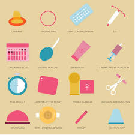
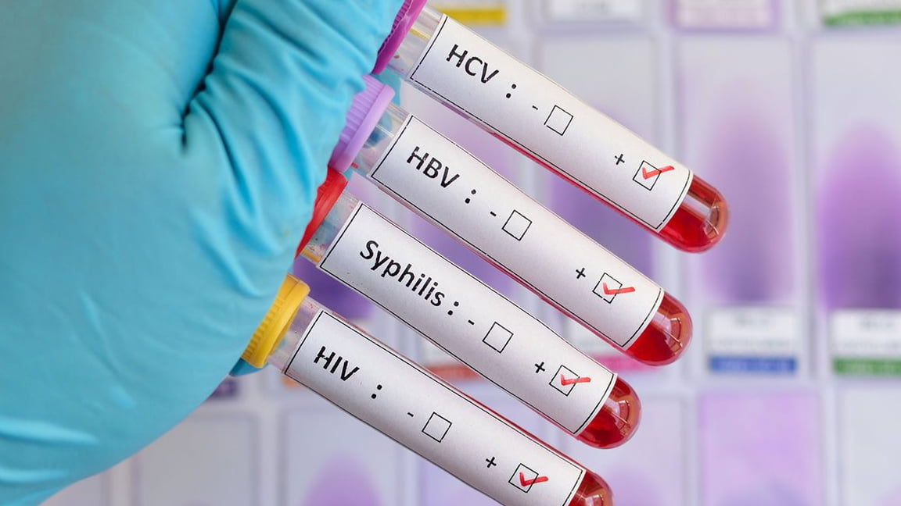
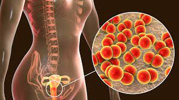

¿Qué son las (ETS)? Las enfermedades de transmisión sexual (ETS) son infecciones que se contagian de una persona a otra usualmente durante el sexo vaginal, anal u oral. Son muy comunes y muchas personas que las tienen no tienen síntomas. Por eso, es importante hacerte exámenes sin importar si tienes síntomas de ETS o no. Sin tratamiento, las infecciones de transmisión sexual (ITS) pueden causar serios problemas de salud. La buena noticia es que hacerte los exámenes no es complicado y la mayoría de estas infecciones son fáciles de tratar.  Las enfermedades de transmisión sexual no siempre presentan síntomas. Es posible contraer enfermedades de transmisión sexual de personas que parecen estar perfectamente sanas y que ni siquiera saben que tienen una infección. Hacerte los exámenes para detectar las enfermedades de transmisión sexual (ETS) es importante: es el primer paso para sentirte mejor si tienes síntomas. Muchas infecciones de transmisión sexual (ITS) no tienen síntomas, por lo que hacerte pruebas a menudo te ayudará a mantenerte saludable. 